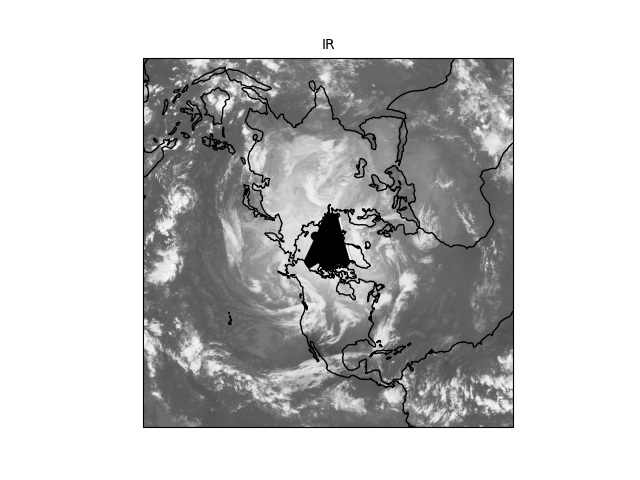

Note
Click here to download the full example code
Simple Plotting¶
Demonstrate the use of MetPy’s simplified plotting interface.
Plots a sample satellite image file.
Out:
Adjusting bad PDB size from 0 to 512.
import xarray as xr
from metpy.cbook import get_test_data
from metpy.io import GiniFile
from metpy.plots import ImagePlot, MapPanel, PanelContainer
data = xr.open_dataset(GiniFile(get_test_data('NHEM-MULTICOMP_1km_IR_20151208_2100.gini')))
img = ImagePlot()
img.data = data
img.field = 'IR'
img.colormap = 'Greys_r'
panel = MapPanel()
panel.plots = [img]
pc = PanelContainer()
pc.panels = [panel]
pc.show()
Total running time of the script: ( 0 minutes 0.611 seconds)